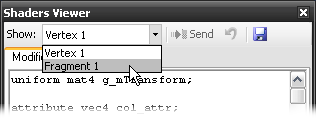

This tutorial explains how to use Adreno Profiler to help optimize GLSL shaders in your OpenGLES application.
First:
 Connect to an application running on your mobile device.
Connect to an application running on your mobile device.
 Create a Scrubber GL document and
capture a frame from the scene that you wish to
optimize.
Create a Scrubber GL document and
capture a frame from the scene that you wish to
optimize.
• Capturing a frame downloads the GPU programs loaded into OpenGLES, making them available for editing and overriding. If the embedded app reloads or relinks a GPU program after the capture, however, Adreno Profiler will not be able to override its shaders. Note that you may need to change your application to not dynamically reload the programs you are interested in optimizing.
 Create a Grapher document and
add some metrics to observe while prototyping
shader optimizations.
Create a Grapher document and
add some metrics to observe while prototyping
shader optimizations.
• At minimum, enable the FPS metric to be informed of the overall performance impact of your shader changes.
Next, select the GPU program you wish to edit by clicking its item in the Programs Browser. The meshes using the selected program will be highlighted in orange in the Scrubber.
As with any type of optimization, it's best to target your effort at the most expensive portion of your scene.
• Adreno Profiler can help with this selection process. For instance, you can use per-rendercall metrics to identify the most expensive render calls (in terms of GPU clock cycles) or most complex shaders (in terms of ALU operations) in your scene, and optimize them first.
• In general, it's recommended to first optimize the shaders used in processing the largest number of fragments or vertices in a scene before moving on to other shaders, even if others are more computationally complex.
The Shaders Viewer displays the shaders bound to the currently selected GPU program. Select which shader attachment to edit from the toolbar.

As you make changes, the modified shader will be automatically recompiled and relinked.
• If compilation or linking fails, generated errors will be shown in the bottom half of the Shader Viewer.
• If linking succeeds, compiler metrics will be displayed, including predicted cycle counts and GPR requirements for the updated shader.
To profile a shader modification, press the "Send" button to override the shader on the device.
• The scene being rendered on your mobile device will begin to use your modified shader.
• Any Grapher metrics being plotted will now reflect the performance or throughput effects of your changes.
• Also note that you can accumulate changes to multiple shaders.
If you wish to revert a GPU program back to its original, unmodified shaders, your changes can be undone using the Shader Viewer's toolbar.
After accumulating a set of optimizations, you can toggle all shader overrides on and off in the Programs Browser's toolbar, in order to see the total effect of all of your changes.